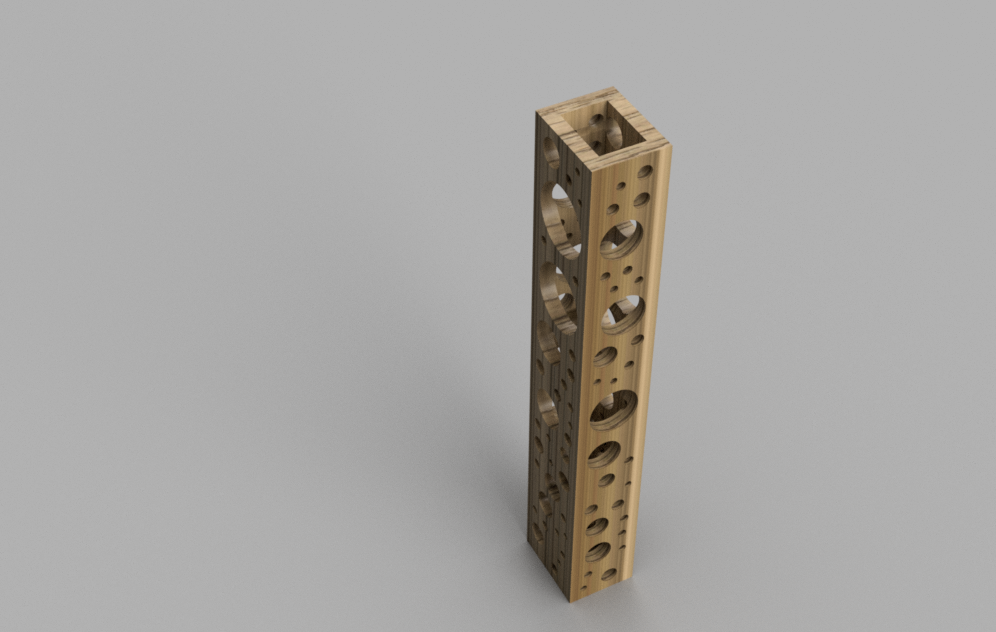
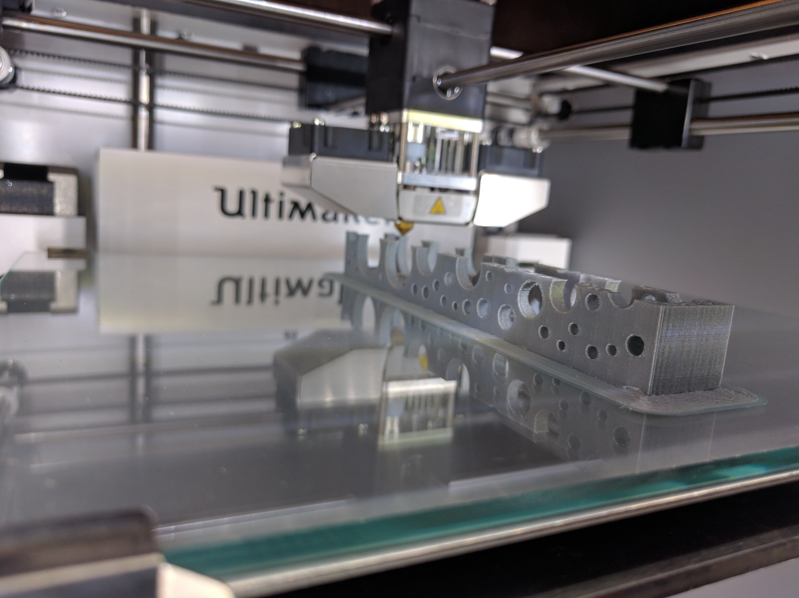
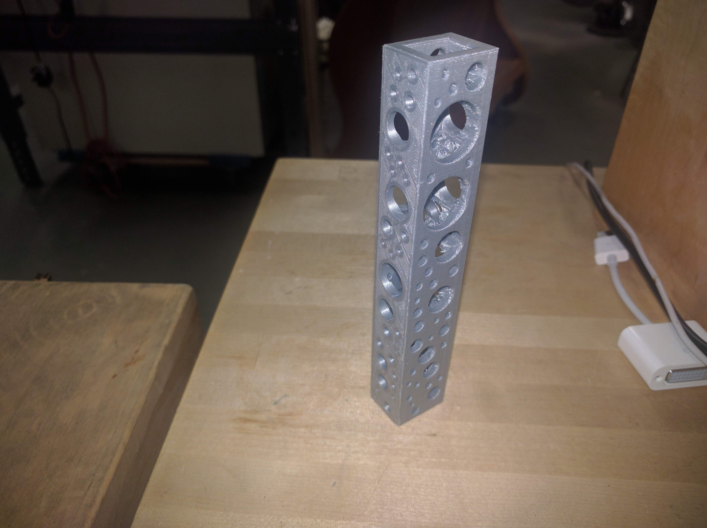

What
Perforate is a python script for Fusion360. It computationally creates holes in a surface.
Images



Who
Perforate was created by Eyal Shahar (@persones). For full portfolio visit www.eyalshahar.com.
Perforate is a python script for Fusion360. It computationally creates holes in a surface.
Perforate was created by Eyal Shahar (@persones). For full portfolio visit www.eyalshahar.com.